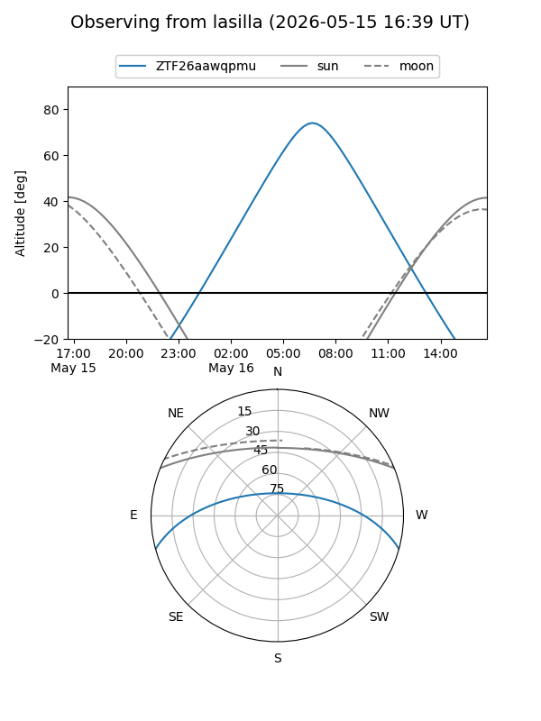
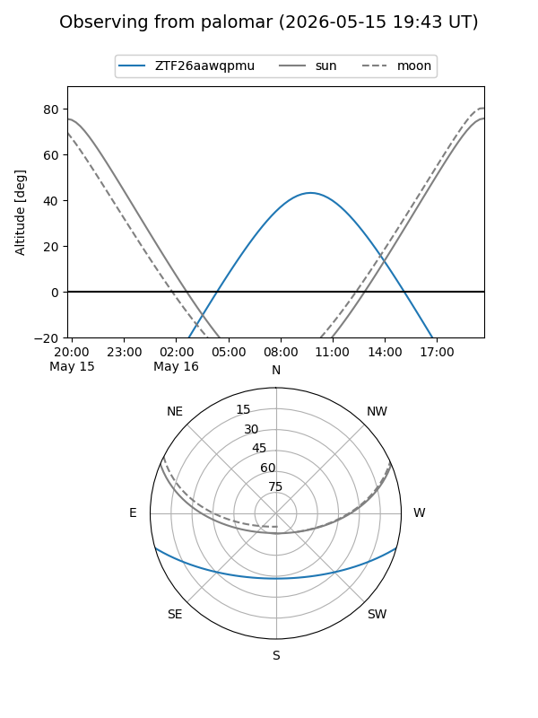

ZTF26aawqpmu
Target ZTF26aawqpmu at 2026-05-16 11:06
Aliases and brokers:
FINK: link
Lasair: link
ALeRCE: link
alt names
ZTF26aawqpmu (ztf,fink_ztf)
Coordinates:
equatorial (ra, dec) = 262.9690,-13.32898
equatorial (HMS+DMS) = 17:31:52.57,-13:19:44.33
galactic (l, b) = (11.6652,+10.92443)
Flags:
likely cv
Photometry:
last ztfg=18.92
3 ztfg detections
Lightcurve
Visibility


Additional plots